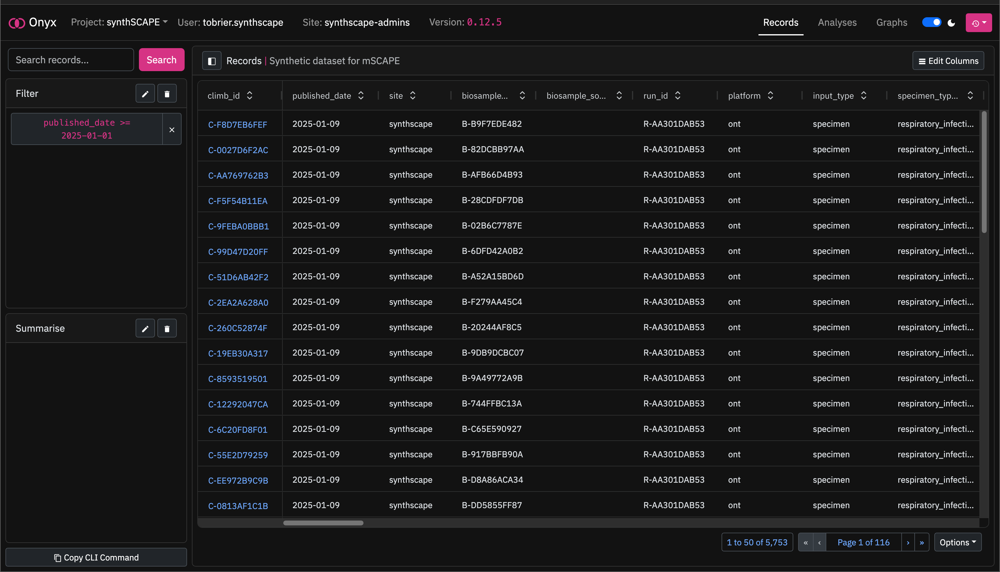

Querying Data¶
Records and analyses share the same interface and functionality for browsing.

This includes:
- A
Searchbar, for basic substring matching against visible fields. - The
Filterpanel, for adding filters against visible, non-visible and nested fields. - The
Summarisepanel, for computing the number of items per summary group, as specified by the selected fields. - The
Copy CLI Command, for copying the current filters and summary fields into a command for the Onyx command-line interface. - The results panel,
RecordsorAnalyses, that displays results matching the current query. Here, results can be re-ordered, as well as exported via the tableOptionsdropdown. TheEdit Columnsbutton can also be used to change the returned columns.
We will now learn how to filter, aggregate and export data using this interface.
Filtering Data¶
Info
synthSCAPE is an Onyx project within CLIMB-TRE for hosting simulated metagenomic data as part of mSCAPE, a world-leading initiative trialling the use of metagenomic data for public health surveillance.
You can find the metadata schema for the synthSCAPE Onyx project here.
Defining the query¶
We are going to add filters on the synthSCAPE dataset to solve the following problem:
Query
Match all synthSCAPE records from 2025 that have a sequence purpose, a run ID of either R-14EC71EBA7 or R-F42A056185, and contain at least 100 reads of Influenza A Virus (taxon ID 11320).
This query can be broken down into the following criteria:
- The
published_datemust be greater than or equal to2025-01-01. - The
sequence_purposemust not be blank. - The
run_idmust be eitherR-14EC71EBA7orR-F42A056185. - Each record's
classifier_callsmust contain at least one entry matching the condition:(taxon_id == 11320) AND (count_descendants >= 100)
Building the query¶
Adding a Filter¶
To add a new filter, click the icon on the Filter panel:

This creates an empty filter with the title Click to Edit.
Clicking on this filter will open its settings:

We will edit the filter as following:
- Set the field to
published_date. - Set the lookup to
gte(greater than or equal). - Set the value to
2025-01-01.
Then hit Apply to filter to the dataset:

As we can see, the dataset has been filtered to return only records with a published_date greater than or equal to 2025-01-01.
Tip
In this example, we have used the gte (greater than or equal) lookup for published_date. However, we could also use the iso_year lookup and set this to 2025 instead.
More Filters¶
To add the second filter, we create another filter with:
- Field:
sequence_purpose - Lookup:
isnull - Value:
false
And to add the third filter, we create another filter with:
- Field:
run_id - Lookup:
in - Values:
R-14EC71EBA7,R-F42A056185
The dataset has now been filtered further:
Nested Filters¶
To match the final requirement, we need to create two nested filters:
Nested filter 1:
- Field:
classifier_calls__taxon_id - Lookup:
exact - Value:
11320
Nested filter 2:
- Field:
classifier_calls__count_descendents - Lookup:
gte - Value:
100
Each record in synthSCAPE contains multiple classifier_calls entries, that correspond to the taxa identified by Kraken2 within the sample. These classifier_calls entries also contain information such as the number of reads matched to each taxon, as well as the taxonomic rank.
When we apply the first nested filter to this classifier_calls table, Onyx will return all records which have at least one classifier_call with taxon_id == 11320.
When we apply both nested filters, Onyx will return all records which have at least one classifier_calls entry matching both taxon_id == 11320 and count_descendents >= 100.
Query Results¶
As we can see, we have now filtered the dataset from the initial 8310 records down to just 388 records that match the target query.
We can click on the first record, C-DCF8C67DDF, and navigate down to the Classifier Calls table and confirm over 100 reads matching Influenza A Virus:

Editing Columns¶
Going back to the results view, we may want to fix the columns that get returned from filtering. This will also speed up any later exports, as we are only exporting the columns that we need.
We can open the columns editor by clicking the Edit Columns button:
We will select the columns climb_id, site, published_date, sequence_purpose and ingest_report:

Then hit Apply, and only the columns we are interested in are returned:
Exporting Results¶
Exporting to CSV/TSV¶
We have our filtered records and the columns we are interested in. Now, we want to export this data to a CSV or TSV within JupyterLab for continued analysis.
Navigate down to the Options menu at the bottom-right of the results table, and select Export to CSV/TSV:

Here, we can see a default generated name for the file, and options to switch between CSV and TSV formats:

We will keep the default name and choose .csv.
Clicking Export will then pull the requested data, and create a CSV file in JupyterLab:

Copying to the Onyx CLI¶
If we wish to transfer our filters to the Onyx command-line interface, we can click Copy CLI Command:

Then paste this into a terminal:

Note
Copy CLI Command only copies filters and summary fields; it does not transfer column and format settings.
We can edit the fields/format with the --include and --format arguments, and filter the dataset: